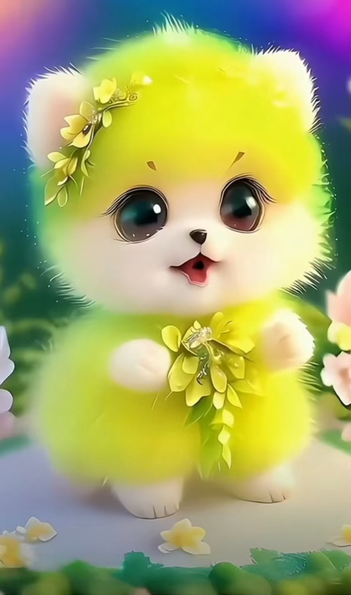

项目参与
在本项目中主要负责的内容是游戏剧情的编写以及小组成员作业的收集和提交。
以前没有接触过相关小游戏制作，这次算是突破自己舒适圈的一次尝试，希望能够借此机会提升自己的能力，丰富自己的知识。
忠实的游戏爱好者，主要接触过的游戏主要有PVP、剧情小说类、解密类以及单机小游戏。
第一次写这种剧本类短故事，希望能够写出玩家喜欢的剧情，力争做到游戏剧情易于理解，能够让玩家喜欢上游戏剧情。
最后，希望我们的项目能够顺利完成！！！
兴趣爱好
写作、阅读、音乐
CIO，剧情设计师
在本项目中主要负责的内容是游戏剧情的编写以及小组成员作业的收集和提交。
以前没有接触过相关小游戏制作，这次算是突破自己舒适圈的一次尝试，希望能够借此机会提升自己的能力，丰富自己的知识。
忠实的游戏爱好者，主要接触过的游戏主要有PVP、剧情小说类、解密类以及单机小游戏。
第一次写这种剧本类短故事，希望能够写出玩家喜欢的剧情，力争做到游戏剧情易于理解，能够让玩家喜欢上游戏剧情。
最后，希望我们的项目能够顺利完成！！！
写作、阅读、音乐